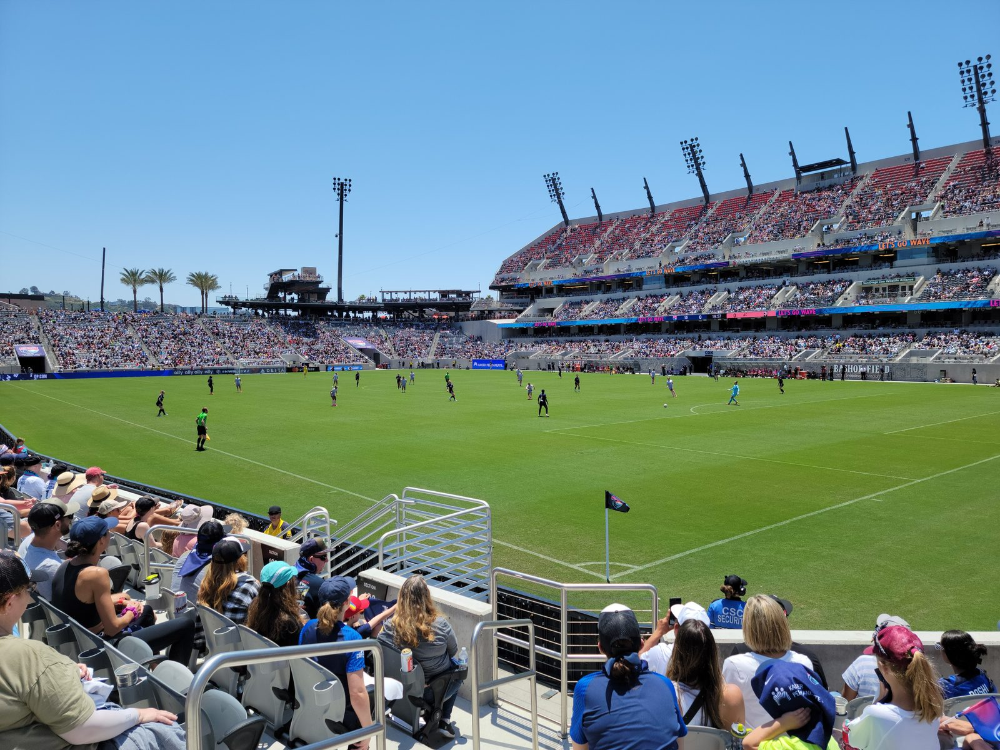
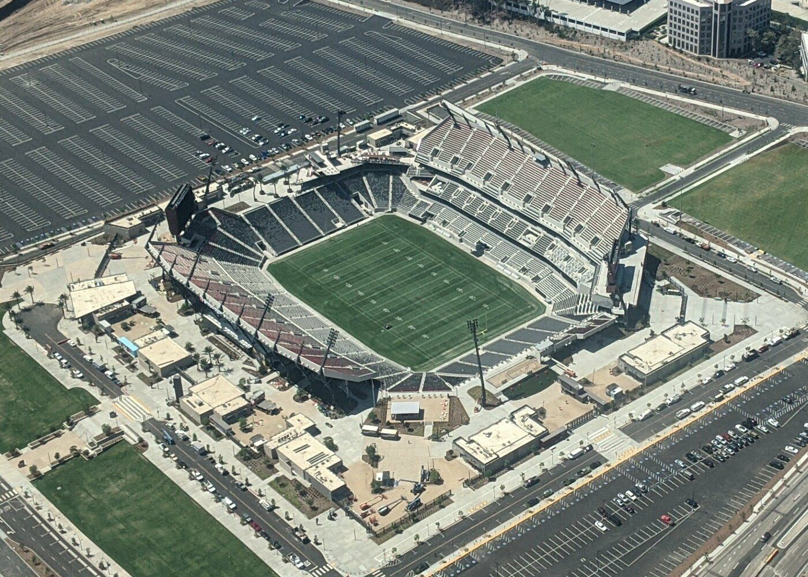

Chaos at Snapdragon: SDFC's 3–3 Draw With Houston Was Thrilling — and Telling

San Diego FC and the Houston Dynamo played out a six-goal classic at Snapdragon Stadium on Wednesday night, a 3–3 draw that had everything: a two-goal lead inside 22 minutes, a 13-minute collapse, a bicycle kick, and an 86th-minute rescue. It was, by any measure, an amazing game of football.
But amid the entertainment, the same old flaws were on full display — and with the playoffs slipping away, they are flaws SDFC can no longer afford.
From dream start to nightmare 13 minutes
SDFC could hardly have started better. Anders Dreyer converted from the penalty spot in the 20th minute after VAR judged Houston goalkeeper Jonathan Bond to have fouled Cédric Bakambu, and two minutes later Bakambu smashed in the second off the underside of the crossbar. 2–0 after 22 minutes, cruising.
Then came the 13 minutes that undid it all. Guilherme pulled one back in the 24th, Mateusz Bogusz leveled with a stunning bicycle kick in the 33rd, and Guilherme completed the turnaround in the 37th. Three goals conceded, and halftime arrived with SDFC trailing 3–2. Gabriel Pirani's scrappy 86th-minute finish from a corner finally rescued a point — but this was two points dropped, not one gained.
The same flaws, under the lights
Possession without purpose. SDFC dominated the ball in the second half — 17 shots to Houston's 10, 10 corners to 3 — but too much of that possession was sterile. The ball moved sideways and backward at walking pace while Houston sat compact and waited. Possession is only a weapon if it goes somewhere; too often SDFC's went nowhere.
The backward alley to the goalkeeper. The most frustrating habit on display: from the halfway line, SDFC repeatedly funneled the ball back through the central channels all the way to CJ dos Santos rather than playing forward. Every backward pass released the pressure Houston was under and invited it straight back onto SDFC. Bravery in possession means playing through lines, not retreating from them.
Free kicks with no ambition. Set pieces were wasted all night. Rather than delivering real balls into dangerous areas, free kicks were taken short, safe, and sideways — possession retained, threat zero. At 3–2 down chasing a game, that caution was baffling. (Irony: the equalizer finally came from a scrappy corner, the one set piece they attacked properly.)
Dilly-dallying in the D. Worst of all was the habit of playing the ball around inside the D — the edge of their own penalty area — instead of clearing danger. Against a pressing side with Guilherme and Bogusz hunting in pairs, that is playing with fire. You do not invite pressure that close to your own goal and expect to survive it.
The bright spark: David Mimbang
Amid the frustration, one player stood out: 18-year-old midfielder David Mimbang. Wearing 36, the Cameroonian — on loan from sister club FC Nordsjælland after starring for Cameroon's U-17s, where he was named tournament MVP — came on in the 58th minute and was SDFC's best player from that moment on. Composed on the ball, forward-thinking in his passing, and showing a maturity well beyond his years, Mimbang looked like he belonged at this level. On a night of sideways passing, he was one of the few always looking forward. Remember the name: DAY-vid meem-BAHNG.
Half-empty Snapdragon
One more thing that stood out, and it wasn't on the pitch: the stadium was half empty. Official attendance wasn't announced, but vast swathes of empty seats at a midweek home game — for a team still chasing the playoffs — was a jarring sight. Snapdragon has produced great atmospheres; Wednesday wasn't one of them. Whether it's midweek fatigue, the seven-game winless run, or something else, the club needs its fortress back.
The playoff math — and what must change

Here is where it gets serious. The draw leaves SDFC 12th in the Western Conference on 33 points — five points below Colorado, who hold the final playoff spot — with five matches remaining. The winless streak is now seven games. Saturday brings a trip to Carson to face SoCal rivals LA Galaxy at Dignity Health Sports Park, and after that, the runway is almost gone.
The opportunity is still real: five points with five games to play is catchable, and Colorado are hardly pulling away. But what SDFC must deliver is clear. First, turn dominance into wins — 17 shots and 10 corners must produce more than one open-play goal. Second, cut out the defensive generosity: conceding three goals in 13 minutes is not playoff football. Third, be brave — play forward from midfield, deliver real free kicks, and stop retreating to the goalkeeper. And fourth, do it on the road starting Saturday, because home draws in half-empty stadiums won't close a five-point gap.
The talent is there — Bakambu's finishing, Dreyer's nerve, Mimbang's promise, Pirani's late heroics. Wednesday proved SDFC can thrill. Now they must prove they can win. The playoffs are still in reach, but only just — and only if the lessons of this chaotic, captivating 3–3 are learned fast.